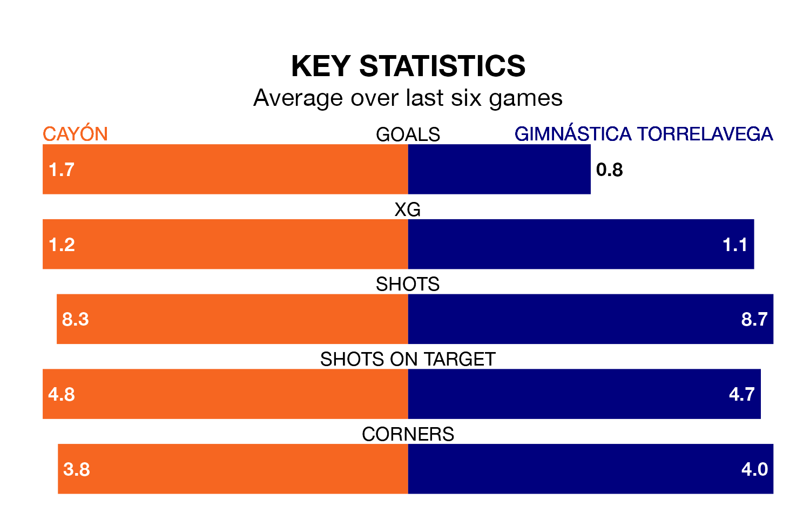

Gimnástica Torrelavega make the journey to the Warner Park Football Stadium to play Cayón on early Sunday looking to pick up points to end their three-game losing streak.
Gimnástica Torrelavega's struggles have left them with six points from their last six Segunda División RFEF Group 1 matches, while their opponents have earned eight from a possible 18.
Cayón are 15th in the table after 31 games, of which they have won six and drawn 12, earning 30 points.
Gimnástica Torrelavega are one place ahead of the hosts in 14th, with nine wins and seven draws putting them on 34 points.
With 33 goals in 31 games so far this season, Cayón are scoring at the league's average rate with 1.1 goals per game. And they are conceding more than average, letting in 43 goals at a rate of 1.4 per game.
The away side are also average scorers, with 1.1 goals per game. They have conceded 1.5 goals per game.
In the last five years, Cayón and Gimnástica Torrelavega have played each other on four occasions. They won one each, and they drew twice.
On average, Cayón scored 1.0 goal and Gimnástica Torrelavega 1.0 in those matches.
Their last meeting was on December 10, when they played out a 2-2 draw.
Cayón's last match was on April 13, a 2-2 draw against Villalbés, with Hitoshi Ishida and Pedro Méndez Larrucea getting the goals for Cayón.
Gimnástica Torrelavega lost 1-0 against Langreo last time out, on Sunday.
Updated: 11:31 (UTC), 15/04/24